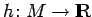
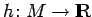

Inhalt Index DeskTop Bronstein

 Dynamische Systeme und Chaos Quantitative Beschreibung von Attraktoren Wahrscheinlichkeitsmaße auf Attraktoren Elemente der Ergodentheorie
Dynamische Systeme und Chaos Quantitative Beschreibung von Attraktoren Wahrscheinlichkeitsmaße auf Attraktoren Elemente der Ergodentheorie


Die Aussage des Ergodensatzes ist nur dann brauchbar, wenn der Träger des Maßes  möglichst groß ist. Seien
möglichst groß ist. Seien  eine stetige Abbildung, ein invariantes Maß. Man sagt (s. Lit. 17.8), daß
eine stetige Abbildung, ein invariantes Maß. Man sagt (s. Lit. 17.8), daß  ein SBR-Maß ist (nach SINAI, BOWEN und RUELLE), wenn für jede stetige Funktion  die Menge aller der Punkte , für die
ein SBR-Maß ist (nach SINAI, BOWEN und RUELLE), wenn für jede stetige Funktion  die Menge aller der Punkte , für die
| (17.32a) |
gilt, ein positives LEBESGUE-Maß hat. Dafür ist ausreichend, daß die Folge der Maße
| (17.32b) |
für fast alle  schwach gegen
schwach gegen  konvergiert, d.h. für jede stetige Funktion immer für gilt.
konvergiert, d.h. für jede stetige Funktion immer für gilt.
| Beispiel |
|
Für einige wichtige Attraktoren, so für den HÉNON-Attraktor, wurde die Existenz eines SBR-Maßes nachgewiesen. |